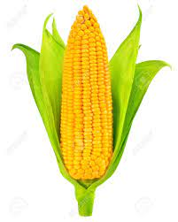
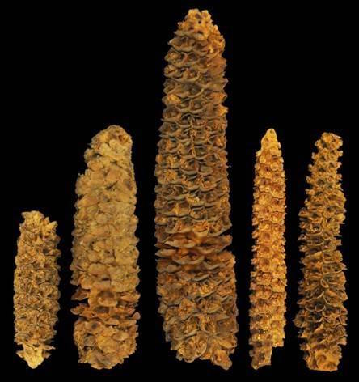
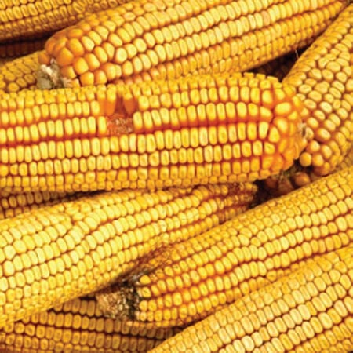
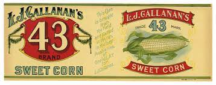
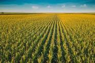
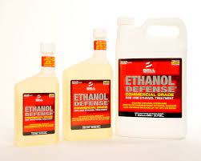
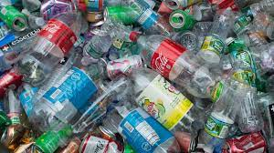
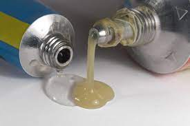
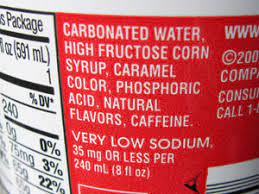
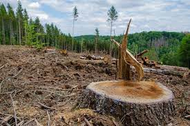

For the begining, we should understand what is the corn represents fot itself
How did corn change our lives?
What is a corn?
Corn - is a North American cereal plant that yields large grains, or kernels, set in rows on a cob. Its many varieties yield numerous products, highly valued for both human and livestock consumption.

The History of corn
The time before our era
The ancestors of corn are believed to have been first domesticated in Mesoamerica, specifically in what is now southern Mexico, about 9,000 years ago. Indigenous peoples in this region, such as the Maya, Olmec, and Aztec, cultivated various strains of corn, which became a staple food in their diet and played an important role in their culture and mythology. They used a process known as selective breeding to improve the size, yield, and flavor of the corn plants over time.
Corn was later introduced to other parts of the Americas, such as the Andes in South America, The cultivation of corn by indigenous peoples in Mesoamerica was a significant achievement in the history of agriculture and has had a lasting impact on the world. Over 4700 years the Native American got started to produce from corn seeds some materials, and from them native americans made clothes and toys
The ancient corn looked like this:

Corn when European knew
When European came to North America they found corn, though it's a curse because of cultural differences with Native Americans, but when they tried corn at the first time, they were impressed about corn, Europeans tried to make corn in the America's land they failed. In 16th century, corn spread around the world, and more and more people got started to know about corn.
Corn in 18th - 19th century
In the 18th - 19th century The Untied States Of America was still a home of the corn in the world. In many regions was producing many sorts and tastes of corns. But in 1850's these different sorts were so hard to package and sell. The trail boards was needed the ONE standardized type of Corn. And in 1893 at the world's exposition, there were introduced the new standardized type of corn which was called "Yellow Dent Corn #1". This type of the corn became the most popular in the USA

Corn in WWII
Corn in WWII played a big role in supporting the war effort. The crop was used to produce a wide range of products that were essential to the war effort. Animal needed corn to eat and survive. Corn was also useful for providing nutrition to livestock and poultry, which were important sources of food for the military. Additionaly, corn was processed to produce a variety of food products that could be stored for long periods, including canned corn and corn meal, which were the meal for soldiers.
Soldiers in WWII

Canned corn in WWII
Corn in todays' days
Today, corn is one of the most famous vegatables and products in the world. You can buy corn in any grocery in the world. Corn is still one of the most important products in the world which eats not oly humans, it's food for animals too like: chickens, turkeys, and ducks. If corn would not exist, the first thing would never exist is obviously popcorn. Popcorn is made from a special type of corn that has a hard outer shell that pops when heated, creating the fluffy, edible snack that we all know. We would not see foods like: Mexican Tortillias as well, which are a staple food in Mexican cuisine. And Tortillias are also used in other famous Mexican foods like: Tacos, Enchiladas and Tostadas.
Tacos which are made from Tortillias
Popcorn
How does corn depend our lives?
How did we start using more corn?
Maybe you didn't noticed that, but the world by last 50 years get started using more corn since 1970. Why? Because people got started to produce the new type of the corn which was called "Yellow Dent #2", and now people produce Yellow Dent #2 moer than other plants in the world, and now corn is 10% of the global crop production. The Yellow Dent Corn #2 was developed by breeding and hybridization efforts of farmers like James L. Reid in the mid-1800s

Corn is NOT ONLY about making food
Corn is not just a food crop, but is also used to make a wide range of industrial products, including ethanol, plastics, and adhesives. Ethanol is produced by fermenting corn starch, which can then be used as a fuel for cars and other vehicles. Corn-based plastics and gles are also used in a variety of products, from packaging materials to textiles and carpets.
Things that are made by corn:

Ethanol

Plastics

Glues
Now, let's talk about BADS of corn
What are disadventages of using corn?
The high fructose corn syrup
What do you think does CocaCola contain in its nutrition facts? Correct! High fructose corn syrup which was made from some corn starch which is broken down into glucouse, through the process called enzymatic hydrolusis. Consuming large amount of HFCS can lead to an accumulation of fat in the liver, which can cause liver damage and contribute to the development of non-alcoholic fatty liver disease. High fructose corn syrup is extremely is also harmful for the enviroment. Growing corn to produce HFCS requires much amounts of land which can cause deforestation and habitat loss if natural ecosystems are converted to agricultural land.

The evidence of CocaCola's having high fructose corn syrup in its nutrition facts

If we won't stop using high fructose corn syrup. Forests will lose trees because of clearings of trees
Conclutions
Corn has a large history which is 9,000 years long. When European first came to North America, corn get started to speard with insane speed around the world. After discovering the Yellow Dent Corn #2 in 1893, there was a massive producing of corn around the world. In todays' days corn takes a huge position in our lives by producing 10% of the global crops. But corn has its own disadvantages which is high fructose corn syrup. High fructose corn syrup is insanely harmful not only for our health, and for our forests as well. But we can stop it by stop using HFCS. But regardless of these disadvantages corn is still very important for us and we need to value it so much. And that's how did corns change our lives.
Interesting facts about corn
1. Corn has a huge history which is 9,000 years
2.The scientific name for corn is "Zea mays," and it belongs to the grass family.
Corn is one of the most genetically diverse crops in the world, with thousands of different varieties grown globally.
3. Corn can be used to make over 4,000 different products, including ethanol, sweeteners, and bioplastics.
4. The husks of corn can be used to make paper, and the stalks can be used as feed for livestock.
5.In ancient times, corn was considered a sacred crop and was often used in religious ceremonies.
6. The tallest corn plant ever recorded was over 45 feet tall.
7. Corn is used as a natural sweetener and is used to make products such as corn syrup, high fructose corn syrup, and corn sugar.
8. The United States is the world's largest producer of corn, accounting for over one-third of global production.
9. Corn is also used in traditional medicines to treat a variety of ailments, including constipation and diarrhea.
10. Corn takes 10% in a global crop-producing
You can watch this video to know about corn's history more